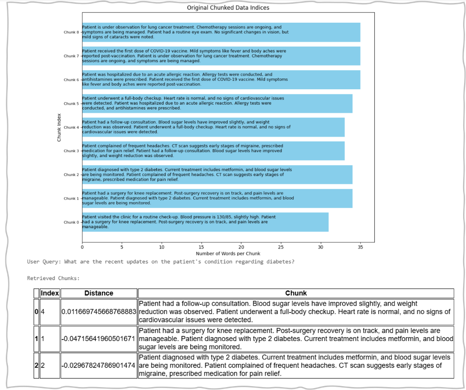

Use Cases
Customer Feedback Analysis (Retail)
This method is effective for evaluating customer reviews or feedback, where comments about products, experiences, and satisfaction are collected in a sequential format. The sliding window chunking strategy helps preserve the overall narrative, ensuring that no vital insights are missed between the segments.
Patient Data Monitoring (Healthcare)
Useful for analysing ongoing patient records and treatment histories, where it's essential to preserve the continuity of information from one visit or procedure to the next. This ensures accurate tracking of health trends and outcomes over time.
Sliding Window Chunking Code
Example of Sliding Window Chunking Result



Pros and Cons of Sliding Window Chunking
| Pros | Cons |
|---|---|
| Preserves Contextual Continuity : The overlapping nature of the chunks helps maintain the flow of information, ensuring that related content remains intact and accessible. | Data Overlap : Depending on the overlap of the windows, it can lead to redundant processing and increased computational load. |
| Temporal Analysis : It is particularly useful for time-series data, enabling the analysis of trends and patterns over specific intervals. | Window Size Sensitivity : Choosing an inappropriate window size can lead to missing important trends or overfitting to noise. |